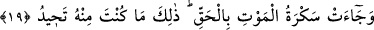

GELECEĞİ
VAAD EDİLEN GÜN
16. Andolsun, insanı biz yarattık ve nefsinin kendisine fısıldadıklarını biliriz ve biz
ona şah damarından daha yakınız.
17. İki melek (insanın) sağında ve solunda oturarak yaptıklarını yazmaktadırlar.
18. İnsan hiçbir söz söylemez ki, yanında gözetleyen yazmaya hazır bir melek
bulunmasın.
19. Ölüm sarhoşluğu gerçekten gelir de: İşte (ey insan) bu, senin öteden beri
kaçtığın şeydir, denir.
20. Sûr’a üfürülür; işte bu, geleceği vâdedilen gündür.
21. Herkes, yanında bir sürücü ve bir de şâhidle beraber gelir.
“Andolsun, insanı biz yarattık ve nefsinin kendisine fısıldadıklarını biliriz.”
Nefsinin ona söylediklerini yani hatırına gelenleri biliriz. Bir başka ifadeyle onun
nefsine kötü düşünceler getiren, ona vesvese verenin ne olduğunu biliyoruz. Vesvese
gizli ses ve kötü havatırdır. Zînetlerin çıkardığı ses de bu kelimeyle ifade edilir.
“Kişiyi vesveseci kılan nefsini biliriz.” Nitekim nefis insanı vesveseli kılan şeydir.
Bu âyette şu duruma da işâret edilmektedir: Allah Teâlâ insanın durumunu,
yaratılmadan önce ilm-i sübûtî ile bildiği gibi yaratıldıktan sonra da ilm-i fiilî ile
bilmektedir. Buna, nefsinin insana verdiği vesvese de dâhildir. Çünkü o da Allah
tarafından yaratılmıştır. Allah’ın yaratmış olduğu bir şeyin kendisine gizli kalması söz
konusu değildir. Nefsin insana verdiği vesveseler içerisine, gerçekleştirmek istediği
şehevî arzuları, kötü huyları, bozuk inançları vb. nefsin vasıflarından olan şeyler de
girer. Nefis bunları insanın kalbini ve aklını karıştırmak ve vakitlerini boşa geçirtmek
için ona fısıldar. Yine Âdem (a.s.)’ın durumu da buna dâhildir. Nitekim Allah Teâlâ onu
yarattı ve yasaklanmış ağaç konusunda nefsinin ona verdiği vesveseyi de bildi. Bu da